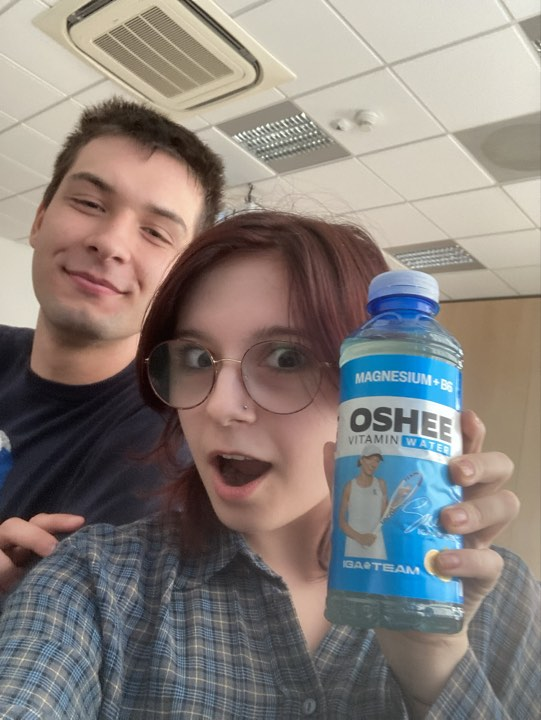

Chad G. P. Thomas
Iga Świątek, jako jedna z największych gwiazd światowego tenisa, zdobyła serca milionów Polaków dzięki swoim niesamowitym osiągnięciom sportowym. Jej niezłomność, wytrwałość i nieustanne sukcesy sprawiły, że stała się nie tylko ikoną sportu, ale także wzorem do naśladowania dla ludzi szukających inspiracji i motywacji do działania. Współpraca z marką Oshee była dla niej naturalnym krokiem, jednak to Iga – nie marka – stała się kluczowym elementem tej relacji. Podczas gdy Oshee może produkować napoje izotoniczne, to właśnie Świątek, swoją osobowością i sukcesami, nadała im znaczenie. Produkty te zyskały na wartości nie ze względu na swoje składniki, ale dzięki temu, że kojarzą się z niesamowitą wolą walki i sukcesami Igi.
Z perspektywy konsumenta, Iga Świątek to osoba, która ma realny wpływ na codzienne wybory związane ze zdrowiem i aktywnością fizyczną. Żartobliwie nazywane w internecie "wywary z Igi Świątek" to napoje Oshee, które swoją popularność zawdzięczają wyłącznie temu, że są kojarzone z jej wizerunkiem. Internauci niechętnie kupowaliby te produkty, gdyby nie nazwisko Świątek na etykiecie. Marka Oshee, mimo że istnieje na rynku od wielu lat, bez tej współpracy nie miałaby szans na osiągnięcie takiej rozpoznawalności. Można wręcz powiedzieć, że to Iga ratuje tę markę, przyciągając klientów, którzy wierzą, że dzięki jej autorytetowi napoje te naprawdę wspierają zdrowy tryb życia. W rzeczywistości jednak, to postać Igi, a nie sam napój, jest kluczowa dla tej relacji.
Oshee zawdzięcza swój sukces Igi Świątek, która ratuje nie tylko markę, ale i życie Polaków, inspirując ich do dbania o siebie i aktywności fizycznej. To jej triumfy, nie reklamy, przekonują ludzi do wyboru napojów tej marki. Świątek, w przeciwieństwie do Oshee, będzie zawsze obecna na sportowej scenie, zapisując się w historii jako jedna z największych tenisistek świata. Marka Oshee, choć teraz czerpie z tej współpracy, nie będzie w stanie dorównać trwałości i znaczeniu jej osiągnięć. Ostatecznie, to Iga jest symbolem zdrowia i wytrwałości, a Oshee jedynie korzysta z jej sławy, by pozostać na rynku.
